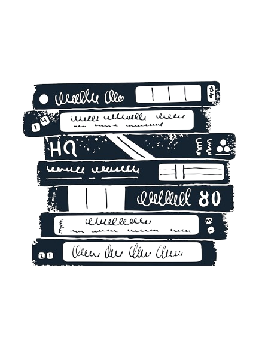

Slasher
A staple of horror cinema, the slasher genre features a ruthless killer, a group of unsuspecting victims, and a deadly game of survival. With iconic villains and unforgettable chase scenes, these films define fear.

Apocalyptic/Zombie
Zombie films explore survival, infection, collapse of society, and humanity under pressure. From slow-burn dread to action-packed chaos, the undead remain a horror staple.

Paranormal
Paranormal horror focuses on ghosts, hauntings, and supernatural forces. These stories build tension through atmosphere, mystery, and unseen threats.

Found Footage
Told through lost tapes and shaky cameras, Found Footage blurs the line between fiction and reality — making every moment feel dangerously authentic.